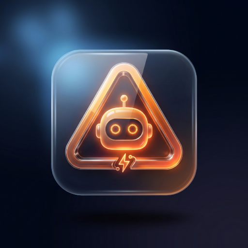

Se te enciende una luz en el salpicadero y no sabes si puedes seguir o tienes que parar. Haz una foto y te lo digo en segundos, en cristiano.
Abrir Chivato AI Gratis · sin registro · se instala en el móvilCon el contacto puesto, de frente al cuadro y cerca. Se abre la cámara trasera del móvil.
Identifica qué testigos están encendidos y los compara con un catálogo de 99 símbolos.
Qué significa, si puedes seguir conduciendo, causas más probables y coste orientativo.
«¿Llego a casa?», «¿es urgente?», «¿qué le digo al mecánico?». Responde en lenguaje normal.
Muchas apps de este tipo le piden a la IA que se invente la explicación y el precio. Chivato AI no: la IA solo dice qué símbolo ve. El significado, las causas, el qué hacer y el coste salen de un catálogo escrito y revisado a mano.
Frenos, presión de aceite, temperatura, airbag, dirección. Detente en un lugar seguro.
Luces, crucero, modo ECO, Start&Stop. Solo te dicen que algo está activo.
| Sistema | Ejemplos |
|---|---|
| Motor | Check engine, presión y nivel de aceite, temperatura, EPC, turbo, potencia reducida, Start&Stop |
| Frenos | Sistema de frenos, líquido, freno de mano y freno eléctrico, ABS, ESP/ESC, ESP OFF, pastillas, AUTO HOLD |
| Ruedas | Presión de neumáticos (TPMS) y fallo del sensor |
| Luces | Posición, cruce, largas, antiniebla delantera y trasera, diurnas, AUTO, intermitentes, emergencia, bombilla fundida, AFS |
| Seguridad | Airbag, airbag del acompañante desactivado, cinturón |
| Emisiones | Filtro de partículas (FAP/DPF y GPF), AdBlue y su cuenta atrás, EGR, catalizador |
| Eléctricos e híbridos | READY, modo EV, batería de alta tensión, carga en curso, sistema híbrido, regeneración, AVAS |
| Asistentes | Crucero y crucero adaptativo, carril, ángulo muerto, tráfico cruzado, cámara tapada, señales, fatiga, colisión |
| Y además | Batería, inmovilizador, transmisión, 4x4, dirección asistida, suspensión, puertas y capó, revisión, limpiaparabrisas, hielo… |
No hace falta pasar por ninguna tienda de apps:
Aviso importante. Chivato AI es una herramienta informativa y no sustituye el diagnóstico de un profesional. Ante un testigo rojo —frenos, temperatura, presión de aceite, airbag o dirección— detén el vehículo en un lugar seguro y no sigas conduciendo.